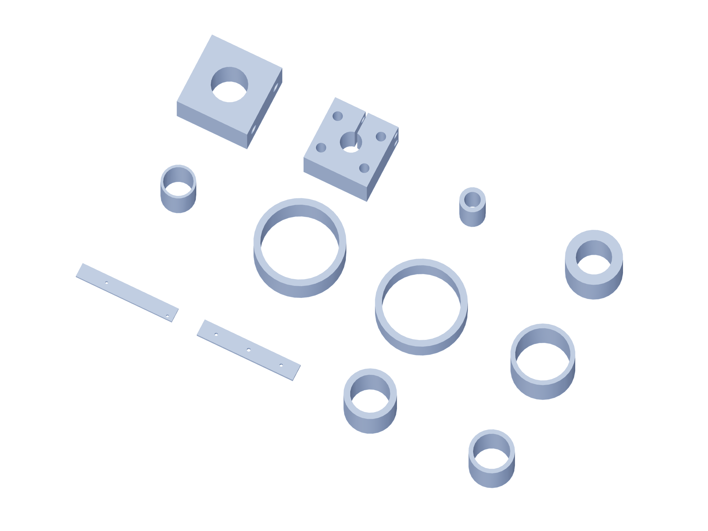

Kit / fabrication14 / 179
Metal kit / 8
6061 aluminum dimensions are finished blank sizes. Bought angles remain angles; shafts, bearings and guide blocks are separate purchased parts.

| Part | Qty | Finished blank / mm |
|---|---|---|
nozzle-test-fork-arm | 2 | 210 × 30 × 6.35 |
nozzle-test-bridge | 1 | 180 × 30 × 6.35 |
roll-foot-metal-spacer | 4 | 8 × 8 × 6.95 |
fiber-base-metal-spacer | 8 | 10 × 10 × 10 |
fiber-axle-lower-tube | 2 | 10 × 10 × 13 |
fiber-axle-upper-tube | 2 | 10 × 10 × 4 |
redirect-lower-contact-tube | 1 | 10 × 10 × 3 |
redirect-upper-contact-tube | 1 | 10 × 10 × 7.15 |
crash-guide-block | 4 | 25.4 × 25.4 × 15 |
shaft-hub | 7 | 38.1 × 38.1 × 25 |
shaft-capture-tube-35p15 | 1 | 20 × 20 × 35.15 |
shaft-capture-tube-16p00 | 1 | 20 × 20 × 16 |
Use gun-positioner-drill-templates.pdf at actual size. The 3D STEP and registered projections govern formed angles and hub faces.